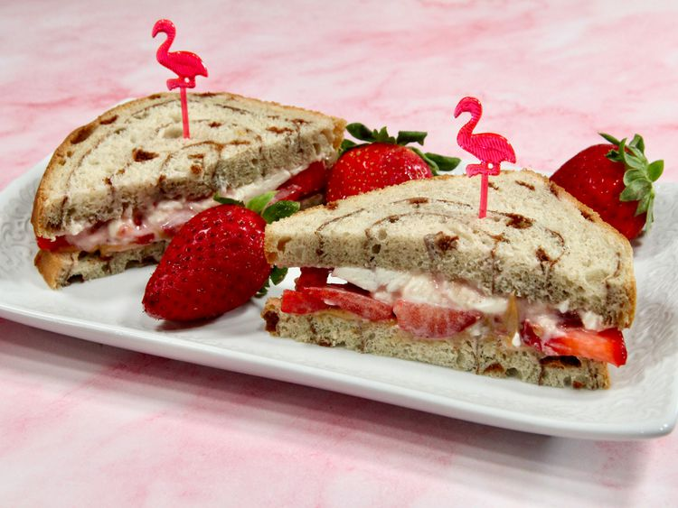

Cream Cheese and Peanut Butter Strawberry Sandwich

Description
This recipe from Allrecipes combines strawberries and cream cheese with an added layer of peanut butter. The leading image was visually attractive with the flamingo pins in the sandwich and the simple color scheme dominated by shades of red ad pink. Hopefully it's as pleasing to the palate as it is to the eye!
Ingredients
- Two (2) tablespoons of softened cream cheese
- One (1) teaspoon of strawberry preserves
- One (1) tablespoon of peanut butter
- Three (3) large strawberries sliced thinly or to taste
- Two (2) slices of cinnamon swirl bread
Steps
- Mix cream cheese and strawberry preserves in a bowl until they're well combined.
- Place the two slices of bread on a plate, spreading peanut butter on one and the cream cheese mixture on the other.
- Assemble the sandwich by placing the peanut butter-laden slice on the bottom, topping it with strawberry slices, then closing the sandwich using the slice of bread with the cream cheese mixture.
- Slice the sandwich in half to your preference, then serve.
Home